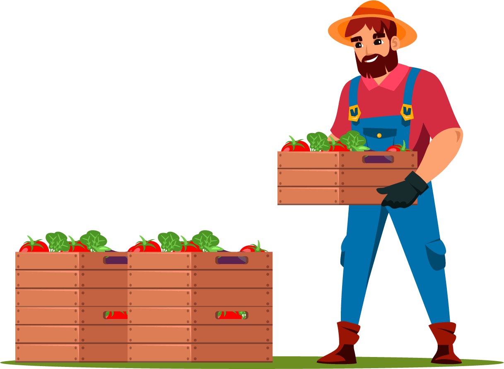

Tengo 3 cajas, cada una contiene un tipo de fruta diferente (peras, manzanas y naranjas). El problema es que todas las cajas tienen las etiquetas de las frutas incorrectas. ¿Cuántas cajas necesito abrir para saber colocar todas las etiquetas correctamente?

¡Felicitaciones! 🥳
¡La repuesta correcta es que solo debemos abrir UNA caja!4 / 6
Veamos los factores importantes para esta decisión:
Existen tres cajas con etiquetas, pero ninguna etiqueta coincide con el contenido de la caja.
Imaginemos que abrimos la caja que tiene la etiqueta de Peras y dentro de la caja vemos Manzanas.
Luego de ver el contenido de esta primera caja (en este caso, Manzanas), voy a la caja que tenga la etiqueta de esa fruta (Manzanas) y se la quito para colocar la etiqueta anterior (siguiendo el ejemplo: Peras).
Teniendo esto en cuenta, solo nos quedan dos cajas (una que tenia la etiqueta de manzanas y la que permanece con las etiquetas de naranja).
Finalmente solo tenemos que intercambiar las etiquetas de las cajas restantes… ¡y listo!
Lo siento, has perdido 😥
No te preocupes si elegiste una opción incorrecta.
Recuerda que el pensamiento lógico es una habilidad que se adquiere con la práctica.